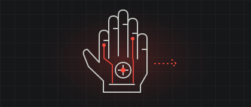

The project
01 / 03I’m designing and prototyping a hybrid tendon and direct drive robot hand at Columbia’s ROAR Lab.
The tendons position the finger links and apply large forces. A local motor adds force in the tangential direction, with a ratchet mechanism intended to let it assist the motion without opposing the tendons.

Intended mechanism behavior
02 / 03The relative tension in the two tendons determines how the motor should be allowed to drive the next link.
- Similar tendon forces
- The ratchet stays centered, allowing the motor to drive the next link in either direction.
- One tendon dominates
- The ratchet engages to one side. The motor can assist in the dominant tendon’s intended direction, while motion in the opposing direction slips.
Current work focuses on mechanism design and prototyping. These behaviors describe the design intent.
Design presentation
03 / 03Tendon routing, actuator relationships, and joint torque equations for the hybrid hand.
2 slides · Use the arrow keys to browse